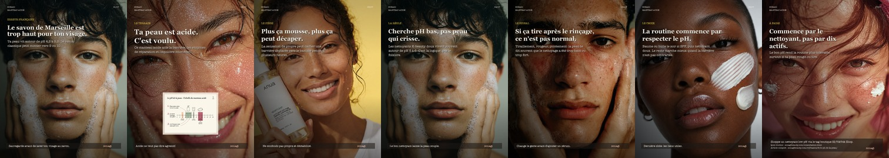
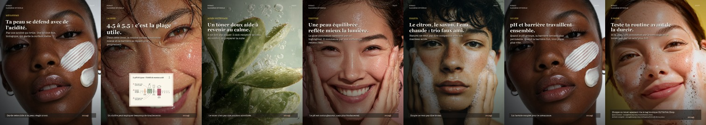
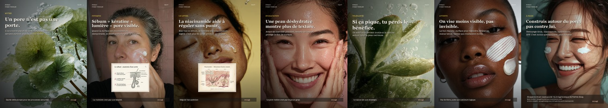
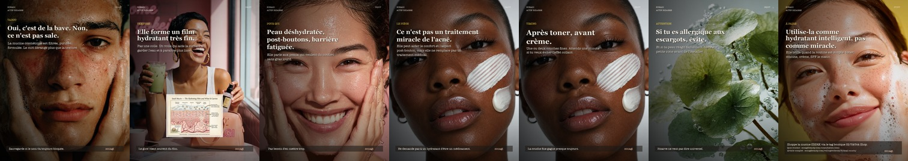
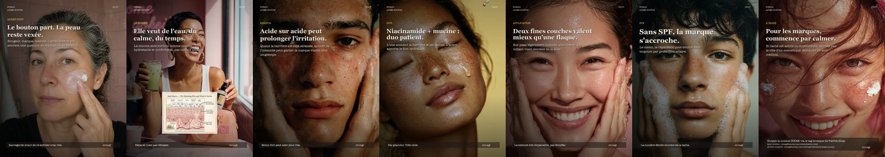
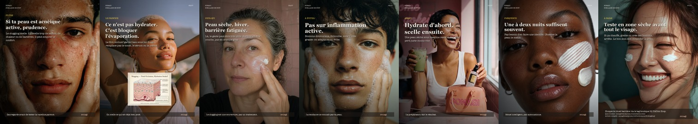
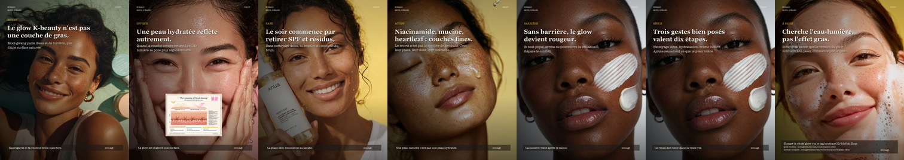
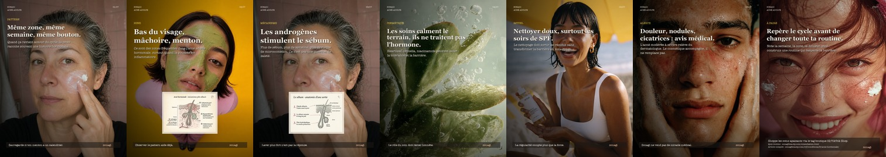
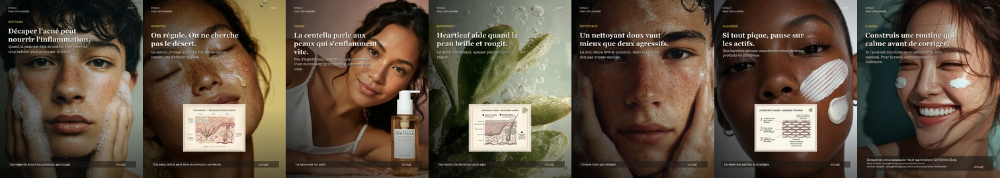

Article: Le pH de la peau. Angle: mistake correction.

Article: Le pH de la peau. Angle: mechanism.
Article: Niacinamide. Angle: expectation reset.

Article: Niacinamide. Angle: pores/sebum myth.

Article: Snail mucin. Angle: taboo to education.

Article: Snail mucin. Angle: post-acne repair.

Article: Slugging. Angle: audience filter.

Article: Glass skin. Angle: myth correction.

Article: Acné hormonale. Angle: cycle pattern.

Article: Acné hormonale. Angle: routine mistake.